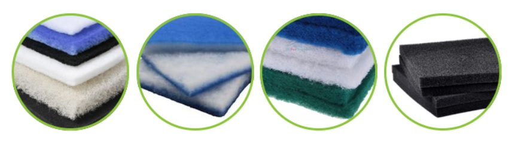
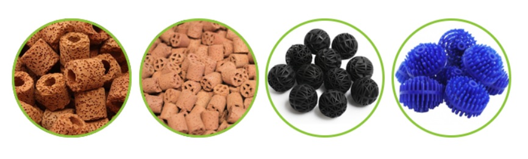
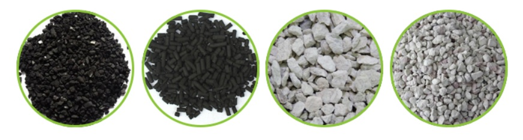

Qual a importância da filtração no aquário?
Um dos tópicos mais comuns discutidos entre os aquaristas ou para quem está iniciando neste hobby é sobre a filtragem e os tipos de filtros de aquário existentes.
Muitas pessoas têm dúvidas sobre como os filtros funcionam e qual usar em seu sistema de filtragem, já que existe uma variedade muito grande de opções e tipos de filtros para aquário.
A filtragem é necessária para diminuir os resíduos tóxicos, partículas indesejáveis e outros componentes químicos dissolvidos que são produzidos por restos de fezes dos peixes, alimentos não consumidos e outros materiais em decomposição.
Um sistema ineficiente de filtragem permite que esses resíduos elevem o nível de amónia na água do aquário, que é altamente tóxico para os peixes.
Manter a qualidade da água é fundamental para a sobrevivência dos seus peixes e para o sucesso do seu aquário, e sem os devidos cuidados, a água pode se tornar tóxica podendo matar seus peixes.
É aí que entra a importância da filtragem do aquário, e como os filtros desempenham esse papel de limpeza ajudando a manter a saúde dos seus peixes.
Existem 3 tipos de filtragem:mecânica, biológica e química.
Filtração mecânica
A filtragem mecânica faz a coleta física de partículas como dejetos e sobras de comida na água (inorgânicas e orgânicas).
Esse tipo de filtragem usa mídia física, como filtro de lã ou a esponja, para peneirar os resíduos particulados da água. A estrutura fibrosa retém os resíduos, que podem então ser removidos. Diferentes mídias para filtragem mecânica prenderão partículas de tamanhos diferentes.
A filtragem mecânica é utilizada como o primeiro estágio do filtro retendo os resíduos maiores, filtrando a água para as próximas etapas da filtragem, e assim evitando o entupimento.
O filtro mecânico deixa a água visivelmente mais limpa, e por isso muitas pessoas acreditam que o filtro está funcionando corretamente, mas não se atentam para a questão química que pode estar prejudicando a saúde dos seus peixes.
É importante fazer a manutenção dessas mídias semanalmente ou a cada 15 dias, dependendo da quantidade de peixes que você tem no aquário. Essa manutenção é importante para evitar que a qualidade da água seja prejudicada, já que resíduos retidos nos filtros começam a desencadear processos químicos liberando compostos tóxicos como a amônia.
A filtragem mecânica é o primeiro estágio de todo o processo de filtragem do aquário.
Filtragem Biológica
Filtragem biológica envolve a decomposição de resíduos por bactérias benéficas que conduzem o ciclo do nitrogênio. Eles se multiplicam na mídia, como essa esponja de espuma e no substrato.
Para manter a sobrevivência dessas bactérias benéficas, é necessário fornecer nutrientes (Nitrogênio e Oxigênio), além de um local para se alojarem.
Isso significa que a temperatura ideal, o nível de oxigênio e o fornecimento de alimentos favorecerão essas bactérias. Em um aquário a temperatura é geralmente uniforme, então isso não afetará onde as bactérias irão colonizar.
Essas bactérias se alojam em qualquer superfície como no substrato e mídias que que atuam nessa etapa da filtragem biológica. O canto do vidro do aquário ou o cascalho não lhes fornecerá a mesma quantidade de comida e oxigênio como estando em uma mídia de filtragem biológica onde há um fluxo constante de novos nutrientes e oxigênio.
Existe todo um processo químico para manter o equilíbrio do ecossistema do aquário, e o Ciclo do Nitrogênio é responsável por isso.
Filtragem Quimica
Alguns aquaristas não consideram a filtragem química como parte principal do sistema de filtragem já que normalmente é usado para remover o odor ou a coloração da água, e nesses casos, o sistema está tratando dos sintomas e o que você precisa lidar é a causa.
A filtragem química depende principalmente do carvão ativado para eliminar os resíduos dissolvidos da água a nível molecular, onde a filtragem mecânica não retém essas substâncias.